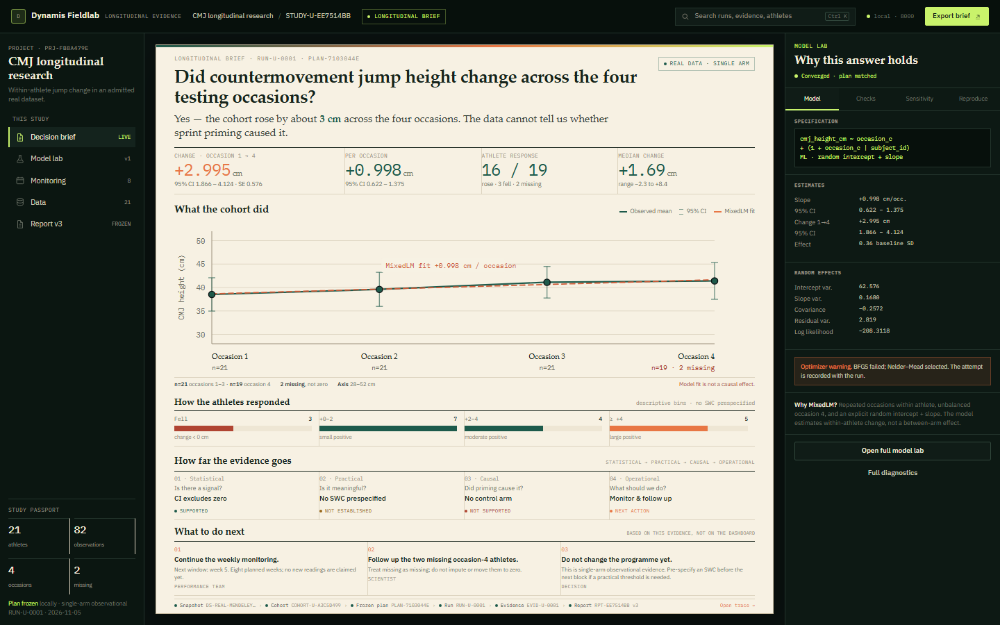
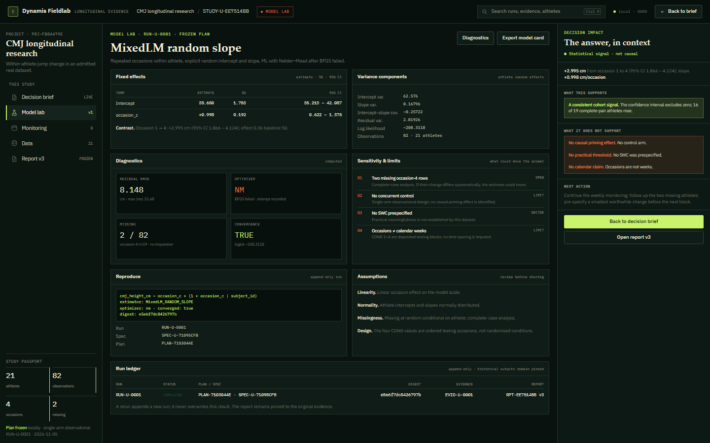

Not a dashboard. Not a notebook. A decision instrument: the first page answers what changed, how sure we are, whether it matters, who responded, and what to do next. The model lab opens only when you need to defend the answer.


It borrows the working grammar of serious statistical software — explicit model specification, coefficient table, random effects, diagnostics, sensitivity and reproducibility — and puts a sports-science decision layer in front of it. The evidence ladder separates statistical signal from practical meaning, causal attribution and operational action. That is the distinction that stops a beautiful chart from becoming a false claim.
It does not call a single-arm trend a priming effect. It does not call 3 cm “meaningful” without an SWC. It does not hide two missing rows. It does not turn a monitoring schedule into invented readings. It does not present a dashboard as a decision.
A brief you can defend.
A lab you can inspect.